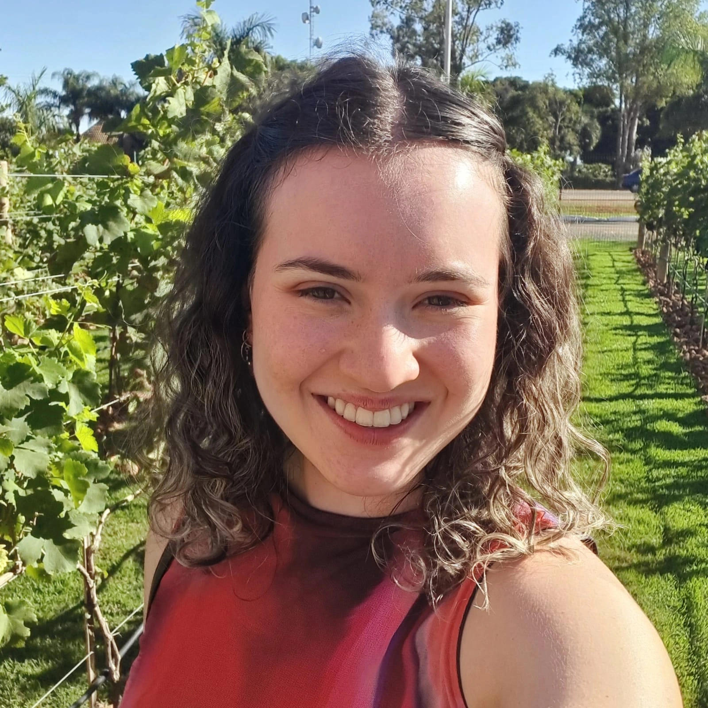

Psicoterapia individual
Um espaço de escuta para acolher emoções, compreender padrões e elaborar os desafios da vida com atenção à sua singularidade.
Psicoterapia para quem quer entender melhor as próprias emoções e relações, num ritmo respeitoso e sem julgamentos.

 SOBRE MIM · CAROLINAC.
SOBRE MIM · CAROLINAC.Sou a Carolina Vieira, psicóloga formada pela Universidade de Brasília (UnB) e pós-graduanda em Terapia Sistêmica.
Meu trabalho nasce do encontro entre histórias, relações e possibilidades. A partir de uma escuta ética e sensível, procuro construir um espaço onde você possa compreender seus vínculos, reconhecer suas necessidades e olhar para a própria trajetória de maneira mais cuidadosa.
Na psicologia, acredito que ninguém existe isoladamente. Nossas experiências também se constroem nas relações, nos afetos e nos contextos que atravessamos.
Conheça minha abordagemUm espaço de escuta e reflexão para diferentes momentos da vida e diferentes formas de se relacionar.
Um espaço de escuta para acolher emoções, compreender padrões e elaborar os desafios da vida com atenção à sua singularidade.
Um olhar para o diálogo, para os vínculos e para as dinâmicas relacionais, em uma construção conjunta de novas possibilidades.
Questões como autoestima, ansiedade, dependência emocional e relações afetivas podem encontrar um espaço de acolhimento.
* Modalidades e disponibilidade de horários devem ser confirmadas diretamente com a profissional.
Na terapia sistêmica, olhamos para a pessoa e também para as relações, os contextos e os significados que fazem parte de sua vida. Não se trata de encontrar respostas prontas, mas de construir possibilidades a partir de uma escuta respeitosa.
Há delicadeza em se permitir olhar para dentro.
O processo é seu. O cuidado é compartilhado.Um pedacinho da minha história, dos meus afetos e de tudo aquilo que faz parte de quem sou. As pessoas, os animais, os encontros e as pequenas coisas que tornam a vida especial e me fazem ser Carolina para além da psicologia.
Ver mais no Instagram @psi.carolinavieira.m
Compartilho reflexões, informações e registros em meu perfil profissional. Acompanhe as novidades e os conteúdos que compartilho.
Explorar o InstagramIlustrações editoriais — não são fotografias do Instagram.
Você não precisa ter todas as respostas para começar a se escutar.
Envie uma mensagem pelo WhatsApp para iniciar a conversa.
Converse sobre as modalidades disponíveis e os próximos passos.
Verifique a disponibilidade diretamente com a profissional.
Você pode conversar diretamente comigo para saber mais sobre os atendimentos e encontrar um caminho possível para começar.
Entre em contato pelo WhatsApp ou Instagram. Posso informar disponibilidade, modalidade de atendimento e orientações para o primeiro contato.
Trabalho com a perspectiva sistêmica, que considera as relações e os contextos de vida na compreensão das experiências humanas.
Entre em contato comigo para confirmar as modalidades disponíveis atualmente e como organizo os atendimentos.
Entre os temas mencionados na apresentação profissional estão ansiedade, autoestima, dependência emocional, conflitos relacionais e experiências afetivas. Cada demanda é compreendida de forma individual.
Se você deseja saber mais sobre o atendimento psicológico, entre em contato. Sua história merece um espaço de cuidado e respeito.